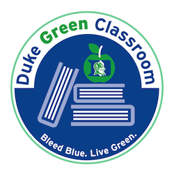

| Classroom | Perkins LINK 070 (Seminar 4) |
| Class meetings | Tue & Thu 10:05 - 11:20 AM |
| Instructor | Mine Çetinkaya-Rundel |
| Office Hours | Mon 1 - 3 PM and Wed by appointment |
| TA | Kyle Burris |
| Office Hours | Wed 9 - 10 AM and Fri 10 - 11 AM |
Texts
All texts are freely available online:
| OpenIntro Data Science (link TBA) | Çetinkaya-Rundel | In progress |
| R for Data Science | Grolemund, Wickham | O'Reilly, 1st edition, 2016 |
| OpenIntro Statistics | Diez, Barr, Çetinkaya-Rundel | CreateSpace, 3rd Edition, 2015 |
Materials
You should have access to a laptop and bring it to every class, fully charged.
Green Classroom
 This course has achieved Duke’s Green Classroom Certification. The certification indicates that the faculty member teaching this course has taken significant steps to green the delivery of this course. Your faculty member has completed a checklist indicating their common practices in areas of this course that have an environmental impact, such as paper and energy consumption. Some common practices implemented by faculty to reduce the environmental impact of their course include allowing electronic submission of assignments, providing online readings and turning off lights and electronics in the classroom when they are not in use. The eco-friendly aspects of course delivery may vary by faculty, by course and throughout the semester. Learn more at http://sustainability.duke.edu/action/certifications/classroom/index.php.